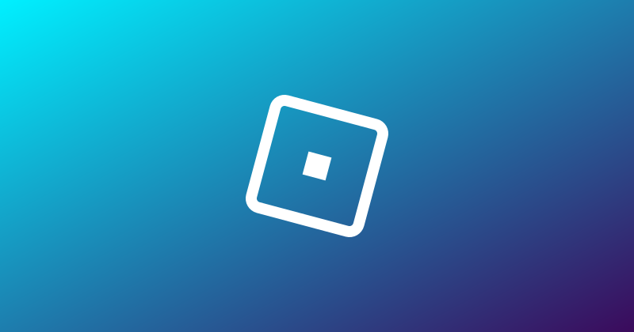

🛠️ Roblox Studio 744: GetCollections și coliziuni calculate async

Pentru developeri: Roblox Studio 744 a apărut (release notes, 22 oct). 🛠️
- CollectionService:GetCollections(Instance) e nou și returnează toate colecțiile din care face parte un Instance (deja activ)
- Când schimbi collision fidelity sau collision precision, calculul se face async, nu sincron, iar Studio arată un indicator cât timp se calculează geometria de coliziune (marcat „Pending”, adică încă nu e activat)
Lista completă, cu fix-uri (de ex. un memory leak din Studio la părțile distruse), e în release notes.
Follow pe TikTok @vexu_online și abonare pe YouTube la VEXU Online. Follow = Au ce bile! 💥